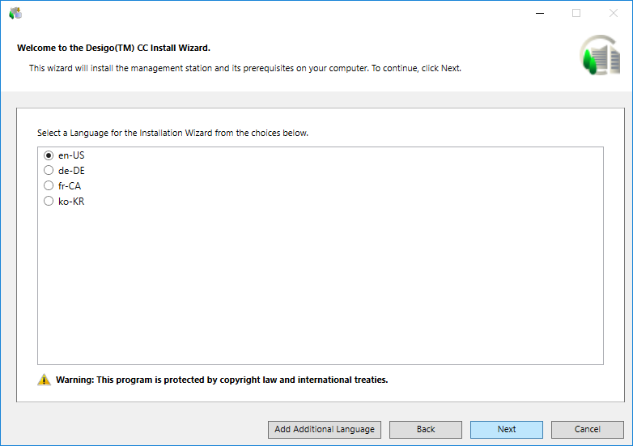

Select a Language to Run the Installation Program
- In the Welcome to the Desigo CC Install Wizard dialog box, do one of the following to determine which language displays on your Installer Wizard:
- Accept the default language selection. The installation language of the OS is the default language if the language pack is available; otherwise, en-US is used. The Welcome to the Desigo CC Install Wizard dialog box and all related messages on this dialog box, however, always display in en-US.
- Change the default language by clicking Add Additional Language, navigating to the directory containing your supported language file, selecting Gms.InstallerSetup.resources.dll, and then clicking Open. You can select a language from the list of languages available in the Languages folder on the Distribution Media.
NOTE: During fresh installation, installation of hotfixes or quality updates, for any errors or warnings, for example, regarding prerequisites, extensions or post-installation steps, digital signature validation, see Consistency Check Scenarios. - Click Next.
